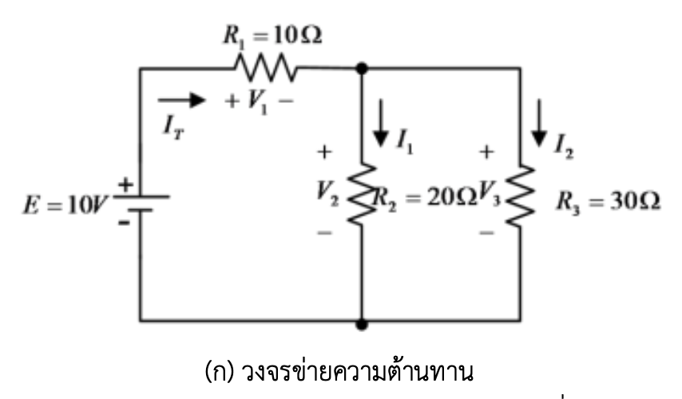
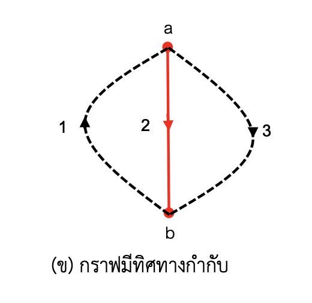
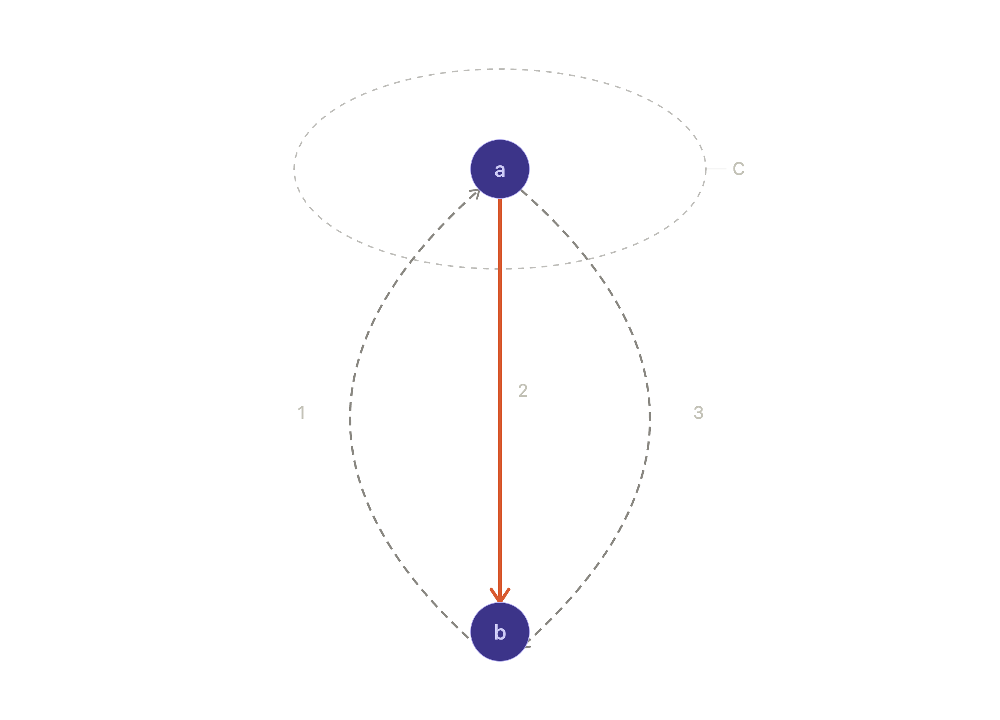

โจทย์ข้อนี้เป็นการประยุกต์ทฤษฎีกราฟโครงข่าย (Network Topology) ระดับ Circuit 2 โดยใช้แนวคิด Tree/Co-tree, Fundamental Cutset และ Fundamental Cutset Matrix ($Q_f$)
อ้างอิงหลัก: C.A. Desoer & E.S. Kuh, Basic Circuit Theory (McGraw-Hill), Ch. 9–10; L.O. Chua, C.A. Desoer & E.S. Kuh, Linear and Nonlinear Circuits (McGraw-Hill), Ch. 12
จากวงจรข่ายความต้านทานใน รูปที่ 1 (ก) ซึ่งเขียนกราฟมีทิศทางกำกับได้ดัง รูปที่ 1 (ข) อันประกอบด้วยกลุ่มของปม คือ $\{a, b\}$ และกลุ่มของกิ่ง คือ $\{1,2,3\}$
กำหนด:
จงเขียนสมการชุดตัดให้อยู่ในรูปแบบเมทริกซ์-เวกเตอร์ ที่มีตัวแปรคือแรงดันกิ่งของทรี $e$ (ยังไม่ต้องแทนค่า $E, R_1, R_2, R_3$)



จากรูป มี 2 ปม $\{a,b\}$ และ 3 กิ่ง $\{1,2,3\}$ โดยดูทิศทางลูกศรแต่ละกิ่งได้ดังนี้:
| กิ่ง | ทิศทาง (จากลูกศรในรูป) | สอดคล้องกับองค์ประกอบในวงจร | ประเภท |
|---|---|---|---|
| กิ่ง 1 | $b \to a$ | กิ่งรวมของ $E$ กับ $R_1$ (กระแส $I_T$ ไหลจาก $b$ ผ่าน $E,R_1$ เข้าปม $a$) | ลิงค์ (Link) |
| กิ่ง 2 | $a \to b$ | $R_2$ (กระแส $I_1$ ไหลจาก $a$ ลง $b$) | ทรี (Tree/Twig) |
| กิ่ง 3 | $a \to b$ | $R_3$ (กระแส $I_2$ ไหลจาก $a$ ลง $b$) | ลิงค์ (Link) |
ตรวจสอบว่ากราฟถูกต้องตามทฤษฎี: $n=2$ ปม, $b=3$ กิ่ง
นิยามของ $e$: โจทย์กำหนดให้ $e$ = แรงดันกิ่งของทรี (กิ่ง 2) โดยยึดทิศทางอ้างอิงเดียวกับลูกศรของกิ่ง 2 คือ $+$ ที่ปม $a$ (หาง) และ $-$ ที่ปม $b$ (หัวลูกศร) — สังเกตว่านี่คือ $V_2$ ในวงจรจริงนั่นเอง
นิยาม: เมื่อตัดกิ่งทรี 1 กิ่งออกจากต้นไม้ (tree) ต้นไม้จะแยกออกเป็น 2 ส่วน (2 กลุ่มปม) เสมอ Fundamental Cutset ของกิ่งทรีนั้น คือเซตของกิ่งทั้งหมดในกราฟ (ทั้งทรีและลิงค์) ที่เชื่อมระหว่าง 2 ส่วนนี้
สำหรับกรณีนี้ ($n=2$): เมื่อตัดกิ่งทรี (กิ่ง 2) ออก ต้นไม้จะแยกเป็นปม $\{a\}$ กับปม $\{b\}$ ทันที (เพราะทรีมีแค่กิ่งเดียว) ดังนั้น fundamental cutset ของกิ่ง 2 คือกิ่งทั้ง 3 กิ่งทั้งหมด (เพราะทุกกิ่งเชื่อมระหว่าง $a$ กับ $b$)
ทิศทางอ้างอิงของชุดตัด: กำหนดให้ตรงกับทิศทางของกิ่งทรีที่นิยามมัน คือ $a \to b$
เครื่องหมายในเมทริกซ์ $Q_f$: เทียบทิศทางแต่ละกิ่งกับทิศทางอ้างอิงของชุดตัด ($a\to b$)
| กิ่ง | ทิศทางกิ่ง | เทียบกับทิศทางชุดตัด ($a\to b$) | ค่าใน $Q_f$ |
|---|---|---|---|
| 1 | $b\to a$ | สวนทาง | $-1$ |
| 2 | $a\to b$ (ตัวมันเอง) | ตามทาง | $+1$ |
| 3 | $a\to b$ | ตามทาง | $+1$ |
$$ Q_f = \begin{bmatrix} -1 & 1 & 1 \end{bmatrix} \quad \text{(ขนาด } 1\times 3\text{, เรียงตามกิ่ง 1,2,3)} $$
สมการ KCL ของชุดตัด (บริบทก่อนไปขั้นต่อไป): $Q_f I_b = 0$ ให้ $-I_1+I_2+I_3=0$ ซึ่งตรงกับ KCL ที่ปม $a$ พอดี ($I_1$ ไหลเข้า = $I_2+I_3$ ไหลออก)
ทฤษฎีบทมาตรฐาน (Desoer-Kuh) กล่าวว่า: แรงดันกิ่งทรี (twig voltage) เป็นตัวแปรอิสระ และแรงดันทุกกิ่งในกราฟเขียนได้ในรูป
$$ V_b = Q_f^{\,T}\, e $$
โดย $e$ คือเวกเตอร์แรงดันกิ่งทรี (ที่นี่มีตัวเดียว คือ $e$)
$$ \begin{bmatrix} V_1 \\ V_2 \\ V_3 \end{bmatrix} = \begin{bmatrix} -1 \\ 1 \\ 1 \end{bmatrix} e $$
เขียนแยกสมการ:
$$ V_1 = -e, \qquad V_2 = e, \qquad V_3 = e $$
เนื่องจากกราฟนี้มีแค่ 2 ปม กรณีนี้จึงลดรูปเป็นการวิเคราะห์แบบ single-node-pair แบบคลาสสิก พอดี: ถ้าตั้ง $b$ เป็นปมอ้างอิง ($V_b=0$) แล้ว $e = V_a$ คือแรงดันปม $a$ นั่นเอง ตรวจสอบด้วยเมทริกซ์การต่อเนื่องแบบลดรูป (reduced incidence matrix, ตัดแถวปม $b$ ทิ้ง) จะได้ $A_{red} = [-1,\ 1,\ 1]$ ซึ่งเท่ากับ $Q_f$ พอดี — เพราะเมื่อ $n=2$ ชุดตัดพื้นฐานหนึ่งเดียวก็คือ "กิ่งทั้งหมดที่แตะปม $a$" ซึ่งเป็นนิยามเดียวกับแถวเมทริกซ์การต่อเนื่องของปม $a$ พอดี และสูตร $V_b=A^T V_n$ (แรงดันกิ่ง = ผลต่างแรงดันปม) ก็ให้ผลเดียวกัน — ยืนยันว่าคำตอบถูกต้องสอดคล้องกันทั้งสองวิธี
ก่อนเขียนสมการ ต้องยึดกฎเครื่องหมาย (passive sign convention) ให้สอดคล้องกับที่นิยาม $Q_f$ ไว้แล้ว: สำหรับกิ่งกราฟทุกกิ่ง เรากำหนดขั้ว + อยู่ที่หาง (tail) ของลูกศร และ − อยู่ที่หัว (head) ของลูกศร โดยที่กระแสอ้างอิงไหลจาก + ไป − ภายในกิ่ง (นี่คือกฎเดียวกับที่ใช้ตอนกำหนด $V_2=e$ ไปแล้วในขั้นที่ 1) การยึดกฎนี้ให้สม่ำเสมอสำคัญมาก เพราะถ้าสลับขั้วแม้แต่กิ่งเดียว เครื่องหมายในสมการสุดท้ายจะผิดทันที
ทั้งสองกิ่งนี้เป็นตัวต้านทานเพียวๆ ทิศทางกระแสอ้างอิง ($a\to b$) ตรงกับทิศทางที่ใช้นิยาม $V_2,V_3$ อยู่แล้ว (+ ที่ $a$, − ที่ $b$) ดังนั้นกฎของโอห์มเขียนตรงไปตรงมาแบบ passive sign convention ปกติ:
$$ V_2 = R_2 I_2 \qquad\Longrightarrow\qquad I_2 = \frac{1}{R_2}V_2 = G_2 V_2 $$
$$ V_3 = R_3 I_3 \qquad\Longrightarrow\qquad I_3 = \frac{1}{R_3}V_3 = G_3 V_3 $$
โดย $G_2=1/R_2$, $G_3=1/R_3$ คือค่าความนำไฟฟ้า (conductance) ของแต่ละกิ่ง
กิ่งนี้ซับซ้อนกว่า เพราะในกราฟทอพอโลยี กิ่งที่ 1 คือการรวม $E$ กับ $R_1$ เข้าเป็นอุปกรณ์สองขั้วเดียว (two-terminal composite element) ตามภาพวงจร: กระแส $I_T$ ไหลออกจากขั้ว $+$ ของ $E$ ผ่าน $R_1$ เข้าสู่โหนด $a$ ขณะที่ขั้ว $-$ ของ $E$ ต่อกับโหนด $b$
ไล่ศักย์ไฟฟ้าทีละช่วง จากโหนด $b$ ไปโหนด $a$ (ตามทิศทางอ้างอิงของกิ่ง 1 คือ $b\to a$):
รวมสองช่วงเข้าด้วยกัน:
$$ V(a) = V(b) + E - I_1 R_1 $$
จัดรูปใหม่โดยใช้นิยาม $V_1 \equiv V(b)-V(a)$ (ขั้ว $+$ ที่ $b$ ตามที่ตารางในขั้นที่ 1 กำหนดไว้ว่ากิ่ง 1 มีทิศ $b\to a$):
$$ \boxed{V_1 = R_1 I_1 - E} $$
นี่คือสมการคุณสมบัติของกิ่งผสม ซึ่งก็คือสมการ Thevenin (แหล่งจ่ายแรงดัน $E$ อนุกรมกับความต้านทาน $R_1$) พอดี
จัดรูปใหม่เพื่อให้ได้กระแสเป็นฟังก์ชันของแรงดัน (จำเป็นสำหรับขั้นต่อไป):
$$ I_1 = \frac{V_1+E}{R_1} = \underbrace{\frac{1}{R_1}}_{G_1}V_1 + \underbrace{\frac{E}{R_1}}_{I_{s1}} $$
$$ \boxed{I_1 = G_1 V_1 + I_{s1}} $$
รูปแบบนี้เรียกว่า Norton Equivalent Form ของกิ่ง — คือแปลง "แหล่งแรงดัน $E$ อนุกรม $R_1$" (Thevenin) ให้เป็น "แหล่งกระแส $I_{s1}=E/R_1$ ขนาน $R_1$" (Norton) นั่นเอง ทำไมต้องแปลง? เพราะวิธีชุดตัด (เช่นเดียวกับวิธีโหนด) ทำงานบนพื้นฐานของ KCL ซึ่งบวกลบ "กระแส" เข้าด้วยกัน จึงจำเป็นต้องมีสมการในรูป $I=f(V)$ ไม่ใช่ $V=f(I)$ — นี่คือเหตุผลเชิงลึกว่าทำไมวิธี node/cutset analysis จึงนิยมแปลงทุกกิ่งเป็น Norton form ก่อนเสมอ
รวมสมการทั้ง 3 กิ่งเป็นระบบเมทริกซ์เดียว:
$$ \begin{bmatrix}I_1\\I_2\\I_3\end{bmatrix} = \begin{bmatrix}G_1&0&0\\0&G_2&0\\0&0&G_3\end{bmatrix}\begin{bmatrix}V_1\\V_2\\V_3\end{bmatrix} + \begin{bmatrix}I_{s1}\\0\\0\end{bmatrix} $$
เขียนย่อ:
$$ \boxed{I_b = Y_b\, V_b + I_s} $$
โดย:
สมการรูปนี้ (companion form) เป็นมาตรฐานที่ใช้ทั้งในการวิเคราะห์วงจรด้วยมือ และเป็นรากฐานของอัลกอริทึม Modified Nodal Analysis (MNA) ที่โปรแกรมจำลองวงจรอย่าง SPICE ใช้จริงในการคำนวณ
ตอนนี้เรามีสมการครบ 3 กลุ่มแล้ว:
$$ \text{(KCL)} \quad Q_f I_b = 0 \tag{1} $$
$$ \text{(KVL)} \quad V_b = Q_f^T e \tag{2} $$
$$ \text{(Element law)} \quad I_b = Y_b V_b + I_s \tag{3} $$
ขั้นตอนการยุบตัวแปร (elimination): เป้าหมายคือกำจัด $I_b$ และ $V_b$ ออกไป ให้เหลือแต่ $e$ ตัวเดียว
แทน (3) ลงใน (1):
$$ Q_f\big(Y_b V_b + I_s\big) = 0 $$
$$ Q_f Y_b V_b + Q_f I_s = 0 \tag{4} $$
แทน (2) ลงใน (4):
$$ Q_f Y_b \big(Q_f^T e\big) + Q_f I_s = 0 $$
$$ \big(Q_f Y_b Q_f^T\big) e = -Q_f I_s $$
นี่คือรูปแบบทั่วไปของสมการชุดตัด ที่เขียนในรูปเมทริกซ์-เวกเตอร์ โดยมี $e$ เป็นตัวแปรเดียว:
$$ \boxed{Y_C\, e = J_C} $$
โดยนิยาม:
สังเกตว่ารูปแบบ $Y_C e = J_C$ นี้ มีโครงสร้างเหมือนกันเป๊ะ กับสมการโหนด $Y_n V_n = I_n$ ที่คุ้นเคยจาก nodal analysis ทั่วไป (Circuit 1) นั่นเพราะ cutset analysis คือการวางนัยทั่วไป (generalization) ของ nodal analysis ให้ใช้ได้กับกราฟที่ไม่จำเป็นต้องมี "ต้นไม้แบบดาว (star tree)" — ขณะที่ nodal analysis แบบดั้งเดิมมองว่าตัวแปรอิสระคือแรงดันแต่ละโหนดเทียบกับ ground เสมอ, cutset analysis ยืดหยุ่นกว่าเพราะเลือกต้นไม้ (tree) ได้อิสระ
คำนวณ $Y_C = Q_f Y_b Q_f^T$ ทีละขั้นตอน (คูณเมทริกซ์จากขวาไปซ้าย):
ขั้นย่อย ก) หา $Y_b Q_f^T$:
$$ Y_b Q_f^T = \begin{bmatrix}\frac{1}{R_1}&0&0\\0&\frac{1}{R_2}&0\\0&0&\frac{1}{R_3}\end{bmatrix}\begin{bmatrix}-1\\1\\1\end{bmatrix} = \begin{bmatrix}-\frac{1}{R_1}\\[4pt]\frac{1}{R_2}\\[4pt]\frac{1}{R_3}\end{bmatrix} $$
ขั้นย่อย ข) หา $Q_f\big(Y_b Q_f^T\big)$:
$$ Y_C = \begin{bmatrix}-1&1&1\end{bmatrix}\begin{bmatrix}-\frac{1}{R_1}\\[4pt]\frac{1}{R_2}\\[4pt]\frac{1}{R_3}\end{bmatrix} = (-1)\!\left(-\frac{1}{R_1}\right)+(1)\!\left(\frac{1}{R_2}\right)+(1)\!\left(\frac{1}{R_3}\right) $$
$$ \boxed{Y_C = \frac{1}{R_1}+\frac{1}{R_2}+\frac{1}{R_3}} \quad (\text{ขนาด }1\times1\text{ เพราะมีทรีเดียว}) $$
คำนวณ $J_C = -Q_f I_s$:
$$ J_C = -\begin{bmatrix}-1&1&1\end{bmatrix}\begin{bmatrix}E/R_1\\0\\0\end{bmatrix} = -\Big[(-1)(E/R_1)+0+0\Big] = \frac{E}{R_1} $$
$$ \boxed{J_C = \frac{E}{R_1}} $$
$$ \underbrace{\left(\frac{1}{R_1}+\frac{1}{R_2}+\frac{1}{R_3}\right)}_{Y_C}\; e \;=\; \underbrace{\frac{E}{R_1}}_{J_C} $$
หรือเขียนในรูปเมทริกซ์-เวกเตอร์เต็มรูปแบบ (แสดงที่มาครบทุกขั้น):
$$ \begin{bmatrix}-1&1&1\end{bmatrix}\begin{bmatrix}\frac{1}{R_1}&0&0\\0&\frac{1}{R_2}&0\\0&0&\frac{1}{R_3}\end{bmatrix}\begin{bmatrix}-1\\1\\1\end{bmatrix} e \;=\; -\begin{bmatrix}-1&1&1\end{bmatrix}\begin{bmatrix}E/R_1\\0\\0\end{bmatrix} $$
นี่คือคำตอบสุดท้ายในรูปแบบเมทริกซ์-เวกเตอร์ ที่มีตัวแปรเดียวคือแรงดันกิ่งทรี $e$ ตามที่โจทย์ต้องการเป๊ะ — ยังไม่ต้องแทนค่าตัวเลข $E,R_1,R_2,R_3$ ก็ยังคงเป็นสมการที่สมบูรณ์และแก้ได้ในเชิงสัญลักษณ์
ลองแทนตัวเลขจริง $E=10\text{V}, R_1=10\Omega, R_2=20\Omega, R_3=30\Omega$:
$$ Y_C = \frac{1}{10}+\frac{1}{20}+\frac{1}{30} = 0.1+0.05+0.0333 = 0.1833\ \text{S} $$
$$ J_C = \frac{10}{10}=1\ \text{A} $$
$$ e = \frac{J_C}{Y_C} = \frac{1}{0.1833} \approx 5.4545\ \text{V} $$
ตรวจทานด้วยวิธี nodal analysis แบบดั้งเดิม (Circuit 1) โดยตั้ง $b$ เป็น ground, $e=V_a$: กระแสที่ไหลเข้าโหนด $a$ จาก $E,R_1$ ต้องเท่ากับกระแสที่ไหลออกผ่าน $R_2,R_3$:
$$ \frac{E-V_a}{R_1}=\frac{V_a}{R_2}+\frac{V_a}{R_3} \;\;\Rightarrow\;\; V_a \approx 5.4545\text{ V} $$
ตรงกันพอดีกับค่า $e$ ที่ได้จากวิธีชุดตัด ✓ ยืนยันว่าการยุบสมการทั้งหมดถูกต้อง — และยังยืนยันสิ่งที่ระบุไว้ตอนท้ายขั้นที่ 3 ด้วยว่า สำหรับกราฟ 2 โหนดกรณีนี้ วิธีชุดตัดลดรูปเหลือเทียบเท่ากับวิธีโหนดพอดี